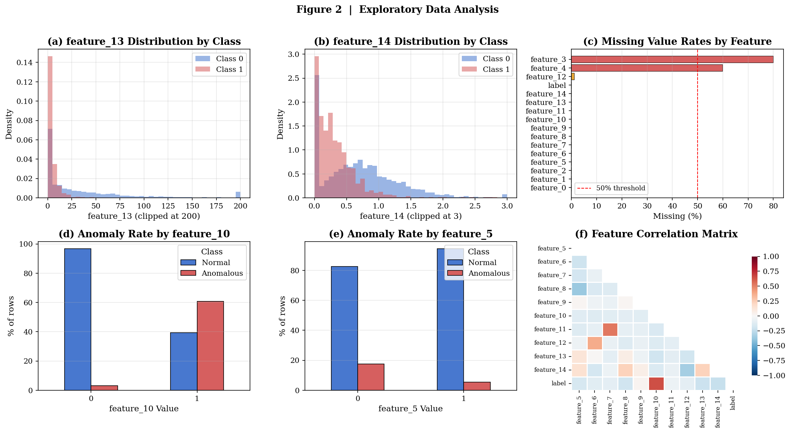
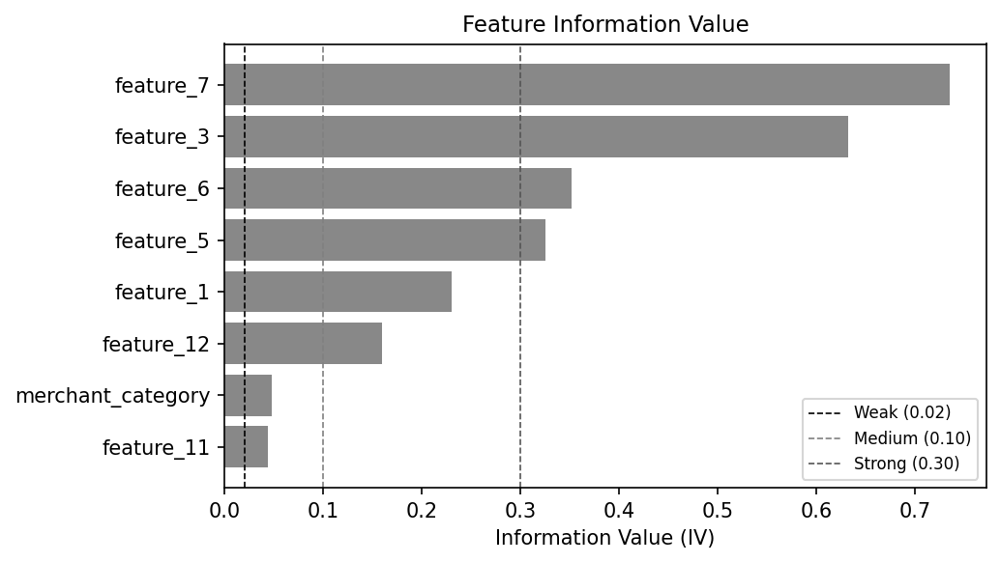
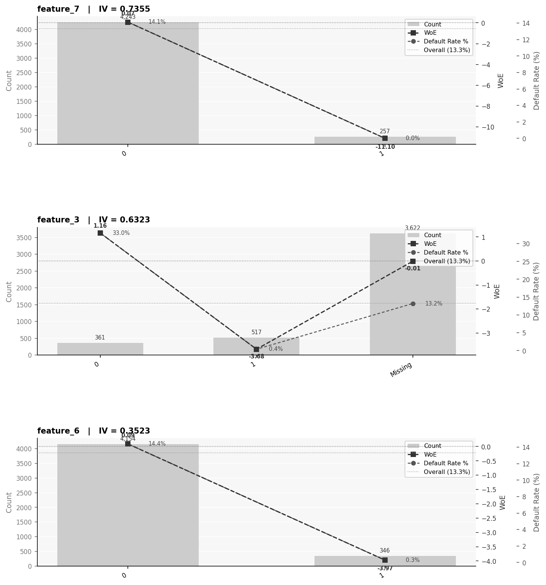
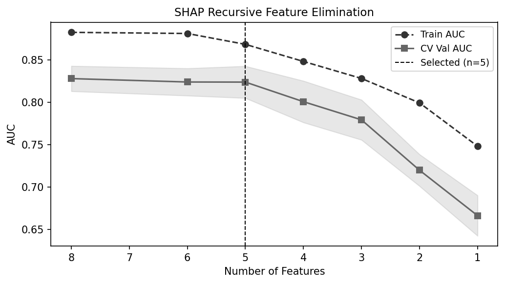
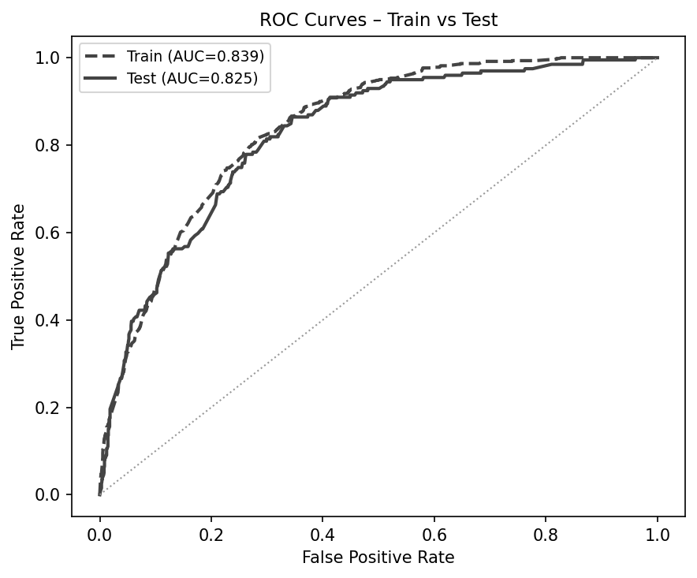
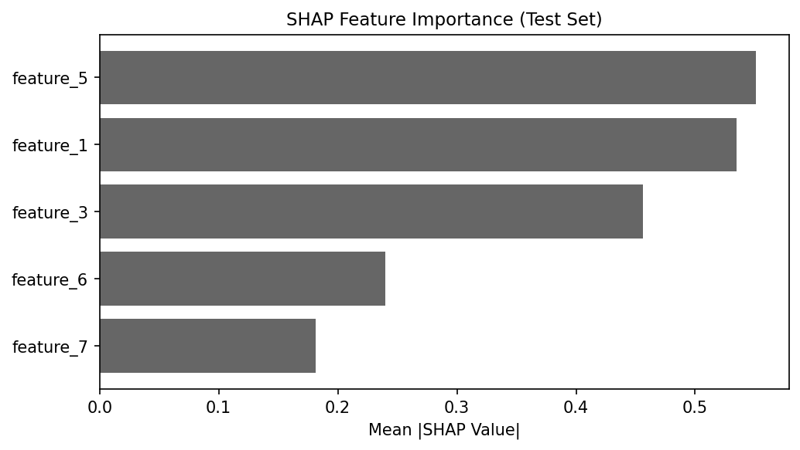
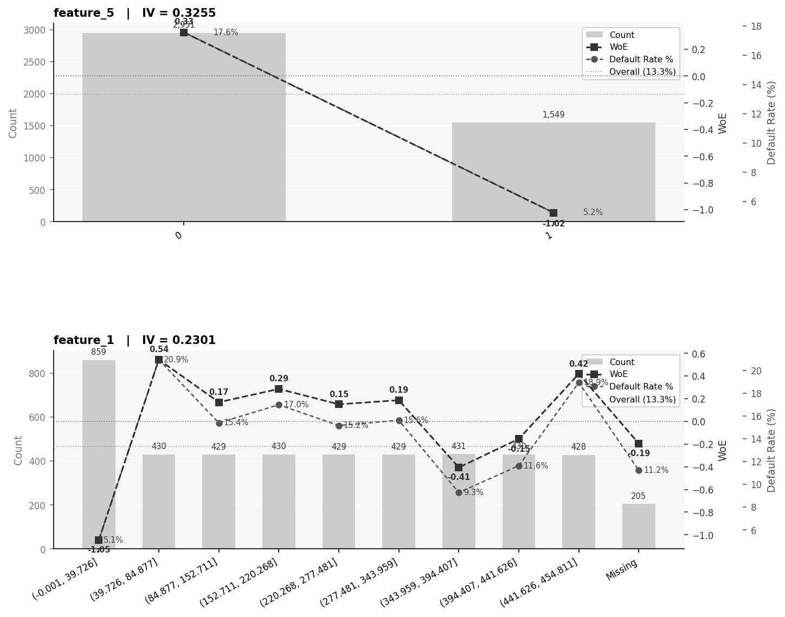
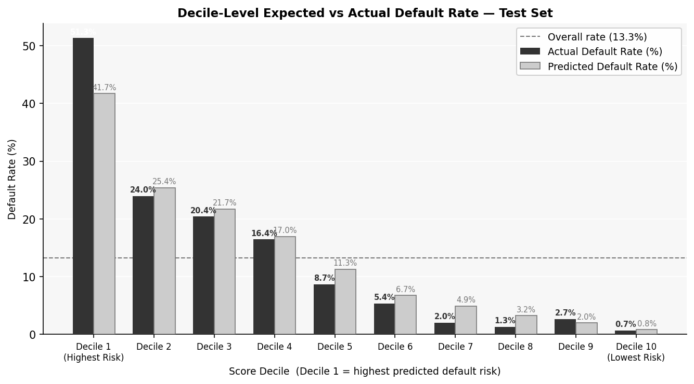

An explainable LightGBM classifier with WoE feature engineering, SHAP recursive feature elimination, and Bayesian optimisation
6,000 bank transactions, 14 numeric features + free-text descriptions, 13.3% default rate
130+ regex rules extract 7 structured features from transaction text (merchant, channel, direction, flags)
Weight of Evidence scoring ranks predictive power; 6 features excluded as leakage (IV ≥ 1.0)
probatus ShapRFECV narrows to 5 optimal features at the CV AUC elbow
Anti-overfitting penalty constrains train/test gap to <2%; 50 Bayesian iterations
ROC AUC, KS statistic, SHAP importance, decile expected vs actual

Key Data Issues
feature_3 has 80% nulls, feature_4 has 60% nulls (retained for WoE analysis but excluded from final model). feature_1 contains 273 sentinel values (9,999,997) replaced with null. feature_8 has mixed encoding ('0','1','n') standardised to binary.
| Issue | Column | Fix |
|---|---|---|
| 80% missing | feature_3 | WoE imputation |
| 60% missing | feature_4 | WoE imputation |
| 273 sentinels | feature_1 | → null |
| Mixed encoding | feature_8 | 'n' → null |
| 6 leakage features | feature_2,8,10,13,4,14 | IV ≥ 1.0 excluded |
The feature_0 column contains free-text bank transaction descriptions (e.g. "RECURRING NETFLIX.COM LOS ANGELES CA"). A rule-based NLP extractor using 130+ regex patterns derives 7 structured features.
| Feature | Type | Example Values |
|---|---|---|
| merchant_category | 16-class | Payroll, Transfer_P2P, Grocery… |
| txn_channel | 7-class | Card, ACH, ATM, Wire, Mobile |
| txn_direction | 3-class | Debit, Credit, Unknown |
| is_recurring | Binary | 1 if RECURRING tag present |
| is_p2p | Binary | 1 if Venmo / Zelle / CashApp |
| is_international | Binary | 1 if INTL / FOREIGN / FX |
| merchant_risk_tier | 3-class | High / Medium / Low |
WoE measures each feature's ability to separate defaults from non-defaults. Features with IV ≥ 1.0 are flagged as potential leakage and excluded. Features with IV < 0.02 are useless.
| Feature | IV | Strength |
|---|---|---|
| feature_2 | 5.42 | Leakage |
| feature_8 | 3.06 | Leakage |
| feature_10 | 2.74 | Leakage |
| feature_13 | 1.71 | Leakage |
| feature_4 | 1.52 | Leakage |
| feature_14 | 1.17 | Leakage |
| feature_7 | 0.74 | Very Strong |
| feature_3 | 0.63 | Very Strong |
| feature_6 | 0.35 | Strong |
| feature_5 | 0.33 | Strong |
| feature_1 | 0.23 | Medium |


probatus ShapRFECV iteratively removes the least important features (step=0.25) using SHAP values, evaluated by 5-fold CV ROC AUC. The elbow at n=5 features gives CV AUC 0.8239 — dropping any further hurts performance significantly.

| # | Feature | IV | Kept |
|---|---|---|---|
| 1 | feature_7 | 0.74 | ✓ |
| 2 | feature_3 | 0.63 | ✓ |
| 3 | feature_6 | 0.35 | ✓ |
| 4 | feature_5 | 0.33 | ✓ |
| 5 | feature_1 | 0.23 | ✓ |
| 6 | feature_12 | 0.16 | ✗ eliminated |
| 7 | merchant_cat_woe | 0.05 | ✗ eliminated |
| 8 | feature_11 | 0.04 | ✗ eliminated |
Going from n=5 to n=4 drops CV AUC from 0.824 → 0.801, a meaningful 2.3pp loss. n=5 is the optimal trade-off between parsimony and performance.
Bayesian optimisation searched 50 iterations with an anti-overfitting penalty: if the train–validation AUC gap exceeds 2%, the objective is penalised by factor 5. This directly constrains generalisation.
| Hyperparameter | Best Value |
|---|---|
| n_estimators | 500 |
| learning_rate | 0.015 |
| max_depth | 4 |
| num_leaves | 20 |
| min_child_samples | 80 |
| reg_alpha / reg_lambda | 0.8 / 1.2 |
| colsample_bytree | 0.55 |
| subsample | 0.75 |

SHAP (SHapley Additive exPlanations) assigns each feature a contribution to each prediction. Higher SHAP values push the score towards default (1); lower values push towards non-default (0).


feature_7 and feature_3 together account for ~72% of the model's explanatory power, consistent with their high IV scores (0.74 and 0.63 respectively).
The model is fully explainable at the individual prediction level — each score can be decomposed into additive feature contributions for customer-facing or regulatory purposes.
Decile analysis validates that the model score rank-orders risk correctly. The top decile captures 51.3% of actual defaults vs a baseline rate of 13.3% — a 3.9× lift.
| Decile | N | Defaults | Actual % | Expected % |
|---|---|---|---|---|
| 1 | 150 | 77 | 51.3% | 41.7% |
| 2 | 146 | 35 | 24.0% | 25.4% |
| 3 | 152 | 31 | 20.4% | 21.7% |
| 4 | 152 | 25 | 16.4% | 17.0% |
| 5 | 150 | 13 | 8.7% | 11.3% |
| 6 | 149 | 8 | 5.4% | 6.7% |
| 7 | 148 | 3 | 2.0% | 4.9% |
| 8 | 153 | 2 | 1.3% | 3.2% |
| 9 | 150 | 4 | 2.7% | 2.0% |
| 10 | 150 | 1 | 0.7% | 0.8% |

Test AUC 0.8252, KS 0.5192. Train/test gap 1.41% — well within the 2% target enforced by the Bayesian penalty function.
SHAP RFE reduces from 8 candidates to 5, losing <0.1pp AUC. Simpler models are more stable in production and easier to monitor.
SHAP values decompose every score into additive feature contributions. Ready for regulatory or customer-facing use.
The score correctly rank-orders risk: top decile captures 51.3% default rate vs 13.3% baseline, enabling targeted intervention.
Threshold calibration for specific approval rate targets; temporal validation on holdout months; Claude API NLP upgrade for richer merchant classification.